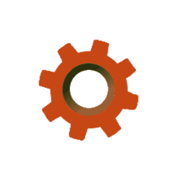
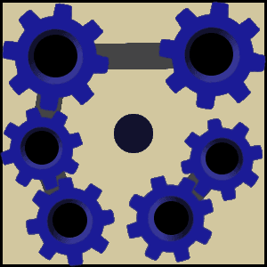

Plattformen
Programmiere den Roboter:
kann der Roboter eine Ebene höher springen, falls sich über ihm eine Plattform befindet.
Mit der Aktion
kann der Roboter vor sich eine Plattform bauen, sofern dort nicht schon eine ist.
Mit der Funktion
Der Roboter soll alle Zahnräder  in die Maschine  einsetzen.
Bitte schau dir vorab die Erläuterungen der Bausteine Erläuterungen der Funktionen unter "weitere Hinweise" an.
Weitere Hinweise:
Mit der Aktion kann der Roboter eine Ebene höher springen, falls sich über ihm eine Plattform befindet.Weitere Hinweise:
Mit der Funktionspring() kann der Roboter eine Ebene höher springen, falls sich über ihm eine
Plattform befindet.
Bitte schau dir vorab die Erläuterungen der Bausteine Erläuterungen der Funktionen unter "weitere Hinweise" an.
Weitere Hinweise:
Mit der AktionMit der Aktion
Weitere Hinweise:
Mit der Funktionspring() kann der Roboter eine Ebene höher springen, falls sich über ihm eine
Plattform befindet.Mit der Funktion
bauePlattformVorne() kann der Roboter vor sich eine Plattform bauen, sofern
dort nicht schon eine ist.